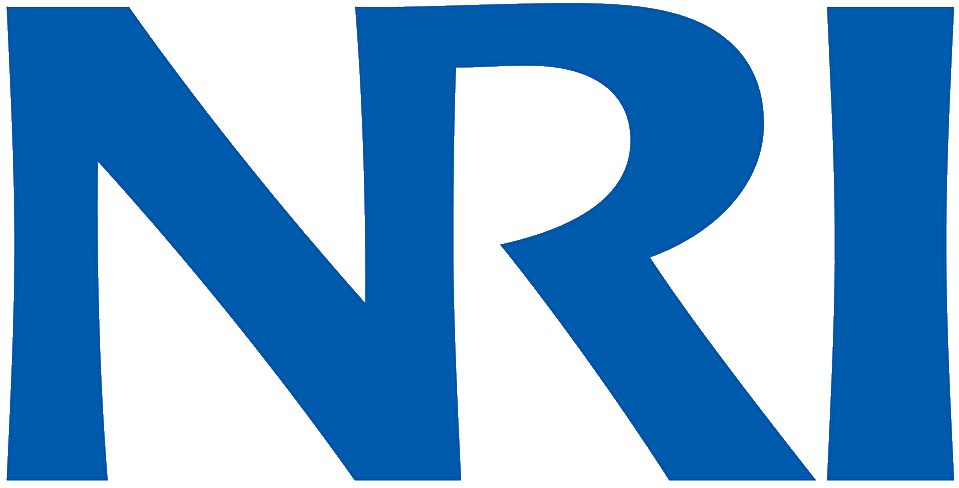
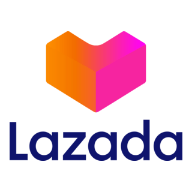
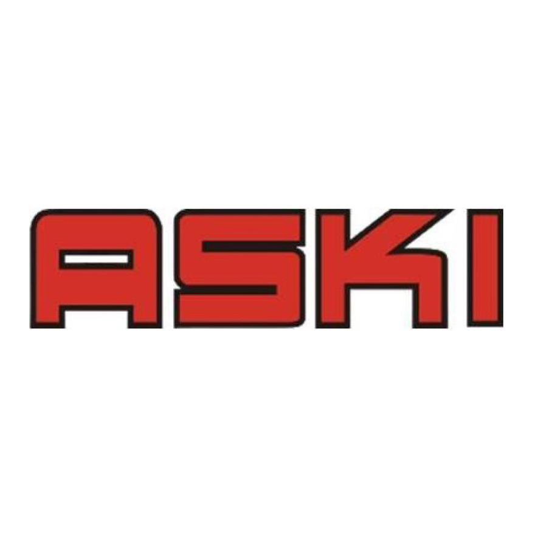
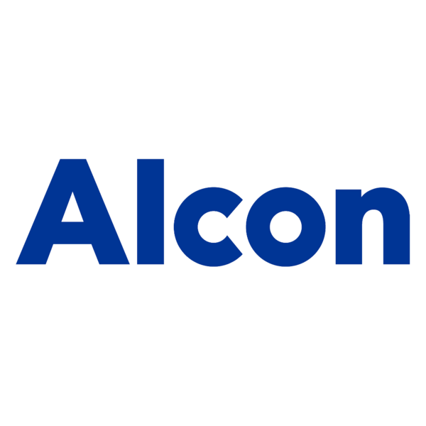

10+ years across management consulting, e-commerce, manufacturing, and technology — from Astra to Lazada to NRI.
10+
Years Experience
5
Companies
$3M+
Cost Savings
5
Industries

NRI
Nomura Research Institute (NRI)● Current
Senior Digital Transformation Consultant
May 2024 – Present · Jakarta, Indonesia
Lead multiple digital transformation and business improvement initiatives across automotive and FMCG industries, partnering with executive stakeholders to drive operational excellence and technology-enabled business growth.
Led SCM digitalization programs for FMCG clients covering manufacturing, Order Management System (OMS), integrated planning, and National Operational Dashboard — driving real-time supply chain visibility.
Developed digital customer engagement platform (automotive sector) connecting principal, dealer, and end customers — enabling self-service, paperless operations, and real-time service tracking.
Led Solutions sub-department driving enterprise-wide innovation, GenAI adoption initiatives, and future-state business process design.
Conducted management consulting for automotive telematics client — cost optimization, process pain point identification, new business model design, and automation roadmap.
Digital TransformationSCM DigitalizationGenAIAutomotiveFMCGOMSConsulting

LZD
Lazada Logistics — Alibaba Group
Manager, Operational System & Continuous Improvement
May 2022 – May 2024 · Indonesia (Nationwide)
Directed nationwide transformation delivering $3M+ annualized cost savings through 12+ CI initiatives: process redesign, material optimization, run wave strategy, kitting, AWB label redesign, damage reduction, and capacity improvements.
Owned warehouse performance governance, including SLA management, operational KPIs, capacity planning, and fulfillment readiness across multiple warehouses and peak-season campaigns.
Directed continuous improvement programs by identifying operational bottlenecks, eliminating process waste, and implementing scalable solutions to improve productivity, service quality, and cost efficiency.
Led automation and warehouse digitalization initiatives, including process redesign, system enhancements, workflow automation, and Warehouse Management System (WMS) optimization.
Established executive dashboards, business intelligence solutions, and performance monitoring frameworks that improved operational visibility and enabled data-driven decision-making at a national level.
Managed cross-functional collaboration across Fulfillment, Sortation, Linehaul, and 3PL stakeholders to optimize end-to-end supply chain performance and operational flow.
Partnered with regional and local leadership teams to implement new services, define operational metrics, manage project risks, and ensure successful execution of strategic initiatives.
Leveraged technology and analytics capabilities, including SQL, Python, BI platforms, and custom application development, to automate manual processes, improve operational visibility, and accelerate data-driven decision-making across fulfillment operations
Supported manufacturing digitalization projects and Industry 4.0 implementation initiatives across client manufacturing environments.
Assisted in deployment of Manufacturing Execution System (MES) solutions and operational digitalization programs.
Collaborated with stakeholders to improve manufacturing visibility, operational efficiency, and data-driven decision-making.
Contributed to supply chain and manufacturing transformation projects aimed at improving sustainability, resilience, and operational performance.
MESERP IntegrationManufacturingSoutheast Asia

ASKI
PT Astra Komponen Indonesia (ASKI)
Digital Transformation Engineer → QA Officer
Sep 2018 – Oct 2021 · Citeureup, Bogor
Designed and deployed full Industry 4.0 ecosystem — AGV robotics, Andon systems, SAP auto-GR/GI, QR traceability, supplier portal — generating $100K+ annual savings.
Led digital transformation initiatives supporting Industry 4.0 adoption and smart manufacturing implementation
Built digital architecture, data management frameworks, and system integration strategies to support manufacturing excellence.
Developed web, desktop, and mobile applications to improve operational visibility, productivity, and process control.
Established methodologies and governance frameworks supporting Lean Manufacturing, Continuous Improvement, and Industry 4.0 implementation.
Identified operational challenges and delivered technology-enabled solutions that accelerated manufacturing digitalization efforts.
Managed application lifecycle activities including system enhancement, maintenance, and continuous improvement.
Industry 4.0IoTSAPAGV RoboticsSmart Factory$100K+ Savings

ALC
Alcon — Novartis Division
Quality Assurance Engineer
Mar 2017 – Sep 2018 · Batam, Indonesia
Managed cGMP compliance programs, internal quality audits, and external audit support (FDA, BSI, MDSAP).
Led Lean Six Sigma Green Belt improvement projects delivering process standardization and measurable cost savings.